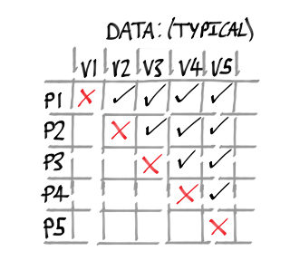
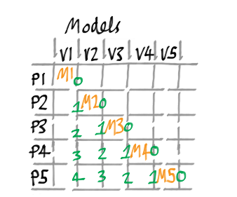
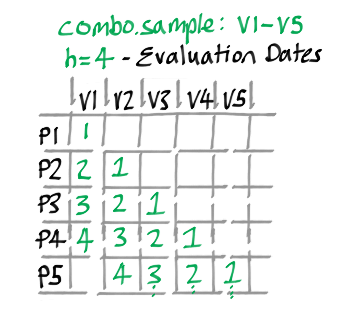
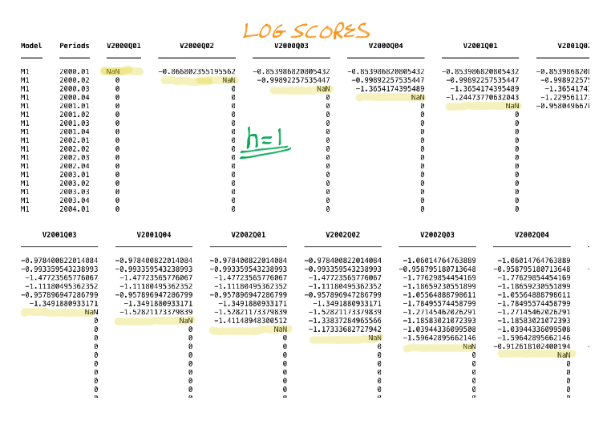
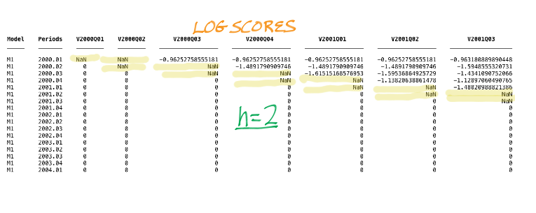

Profor Combination Details
Contents
Batchcombination
The sample property in the Batchcombination file required defines the period over which models will be evaluated / combined. Note that the dates refer to data vintages in the out of sample evaluation period. If there is a one-period lag in the release of the macro data, then the first forecast origin is one period prior to the start date in the Batchcombination sample command.
An example
Consider an example case where we have 5 periods, P1 - P5. These 5 periods will correspond to 5 potentially different vintages of data, V1 - V5. In the figure below illustrates the typical quarterly macro data structure for which there is a one period data release lag (ticks where data are available, and crosses for no data availability).

Essential experiment settings
Suppose the researcher specifies:
1. Batchcombination.sample = 'P1-P5'
2. Batchcombination.forecastSettings.nfor = 4
That is, evaluates (combineS) over the (out of sample) evaluation sample 'P1-P5' and for a forecast horizon 1 through 4.
What's going on in Profor.doModels for this example?
PROFOR recursively passes through the evaluation sample and estimates 5 models, 'M1-M5', using data sources that can be model specific, provided by the corrspending data sources in vintages 'V1-V5'. These models are stored in seperate folders.
The figure below shows each of these models and the forecasts produced. Note, that because we have a 1 period data lag requesting nfor = 4 will produce 5 forecasts including the nowcast (h=0).

These model vintages will be used in the following combination stage.
What's going on in Profor.doCombinations?
The diagram below shows the 4 evaluation periods at each date specified in the sample command in green, from h=1 to h=4.

Timing Nuance
Although we specify to combine with 'forecastSettings.nfor = 4', Profor starts the 1-step evaluation from the current period (nowcast), i.e. for P1, the first (h=0) forecast is the nowcast.
Suppose these models have the same structure, so in the estimation step all that happens is the extraction of the models from the Profor.doModels step, plus the evaluation and combination of forecasts. Below you see salient features of a combination and one element of the resultCell where all of the evaluation results are stored for each vintage.

Timing Nuances / Recursive Structure
Profor.doCombination passes recursively over the evaluation sample (P1-P5) evaluating 5 forecasts for each data vintage, V1-V5.
Results
The results of the combination stage are stored as models in a folder in the results directory as combination_<variable_name>/results/<vintage>, e.g. 'combination_gdp/results/2000.02'.
The extraction and storing of these forecasts and evaluations are located in the model.estimation.resultCell.
This experiment will store 5 sub-folders corresponding to the evaluation of the 5 seperate models (M1-M5).
Constructing forecast combinations
The latest weights available at each horizon are used to construct the corresponding forecasts and stored as Tsdataforecast objects in the forecasting property of model.
Example real-time results matrix
The illustration below displays the log scores for 2 forecasts horizons across different vintages. NAN's occur where the observation being forecast isn't available (yet).

